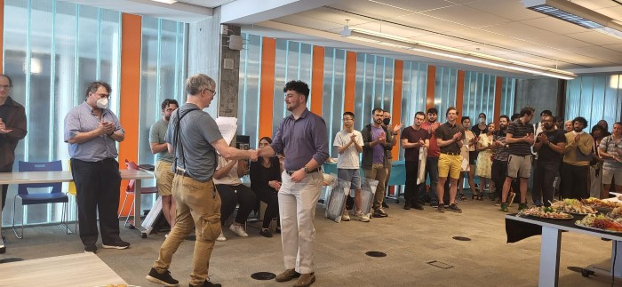

Supervised by Dr. Camelia Karimianpour of the Department of Mathematics at the University of Toronto.
Head Teaching Assistant - Fall 2024 Tutorial Teaching Assistant - Fall 2023 Tutorial Teaching Assistant - Fall 2022
Since 2022, I have worked closely with Dr. Camelia Karimianpour (Course Coordinator) to integrate standard-based grading approaches in the course MAT188 - Linear Algebra for Engineers, at the University of Toronto. The primary objective of this work was to develop LaTeX packages to store a database of mathematical theorems, learning standards, and questions which could later be pulled to create course documents. Using these packages, we sought to provide students with Post-Class Essentials (PCEs) and a standard-based grading approach for some course components. Recent efforts within this project have utilized student-collected data to determine the effectiveness of PCEs as a replacement for standard textbooks and the incorporation of standards-based grading. Furthermore, these results were presented by Dr. Geoffrey McGregor, who collaborated with this project, at the Candian Engineering Education Association conference (2024)
You can read the documentation for the MAT188 LaTeX library here.
Additionally, further details are available under the GitHub repository. Presentation of DeLury Teaching Award at the Department of Mathematics Spring Reception (2023).